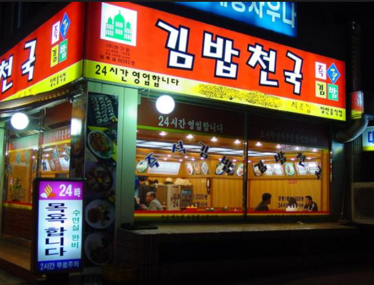
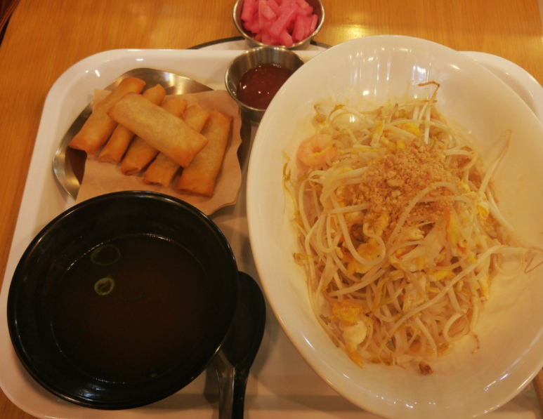

김밥천국

원래 김밥천국은 다 어느정도 먹을만한데 아직도 난 여기서 제육볶음을 먹은것이 기억이 날정도로 맛이 끔찍하다. 아는 동기와 함께 제육을 먹으러 갔는데 그 진짜 미묘한 이상한 맛은.... 더 슬픈건 그떄 옆에서 우리먹는걸 보고 제육을 시킨사람이 있었다는 것이다. 여튼 라면에 공깃밥아니면 비추비추
지지고
여기는 감성장사를 하는지 언제는 열었다가 닫았다가 밥도 나왔다가 기다렸다가 되게 불친절한 곳이다. 게다가 나랑 취향이 안맞아서 맛이 없고 그냥 맵기만해서 별로다. 0성
구 푸드코트

여기 뷔페에서 그나마 먹을만하다고 생각했던게 스파게티고 나머지는 다 별로였는데 스파게티를 먹다가 맛이 너무 이상해서 원래 스파게티가 무슨맛인지 까먹을 정도였다. 가지말자
엉터리 생고기
이거 처음에 먹을때는 괜찮은 고기였는데 그다음에 리필해서 먹으니깐 아... 이래서 엉터리 생고기구나 라는것을 알정도에 끔찍한 고기맛이였다. 여기 갈빠에 차라리 다른데를 가자
오늘의 밥집